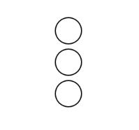

Create 3 circles, each with an x-position of 50 and a radius of 25. Use variables xPos for the x-position of the circle, a variable yPos1 at 20 for the y-position of the first circle, a variable yPos2 at 50 for the y-position fot he second circle and yPos3 at 80 for the y-position of the third circle.
Expected Output:

Note: Is there any way you can reduce the number of variables? Yes, you
can use an array. Create an array called yPos and define it as follows: yPos = [20, 50, 80]
Replace the variables yPos1, yPos2, and yPos3 with the array yPos. Access an array element using
indexing: yPos[i] where i is the index.
Note: The index i
refers to the location in the array, and an array's indexing starts from 0. So, yPos[0]
refers to the first element in the array yPos.
Expected Output:
Instead of writing individual circles for each element in the array, use a for loop to create a circle
for each element in the yPos array.
Note: To get the length of an array,
you can use array.length.
Expected Output:
Similar to example 5.1.3, use the forEach function to access every element in the yPos array.
Expected Output:
Continuing from example 5.1.4, define the yPos array as follows: yPos = [50, 80, 20].
Sort the array using the sort() function before running the forEach loop on the yPos array.
Expected Output:
What happened? Visually, nothing changed, but the array has been sorted. If you print yPos before (in the setup() function) and after (in the draw() function) the sort, you should see the arrays in different orders. The sort() function is useful when you need to sort data.